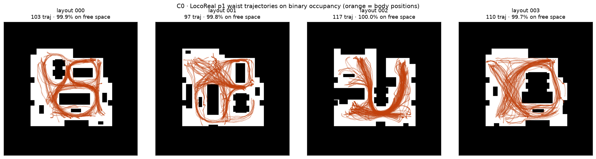
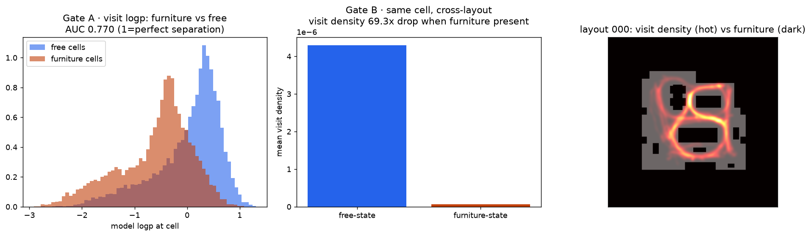
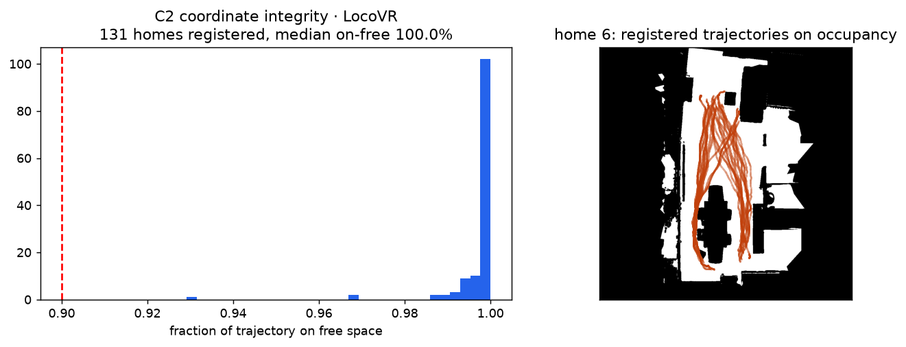
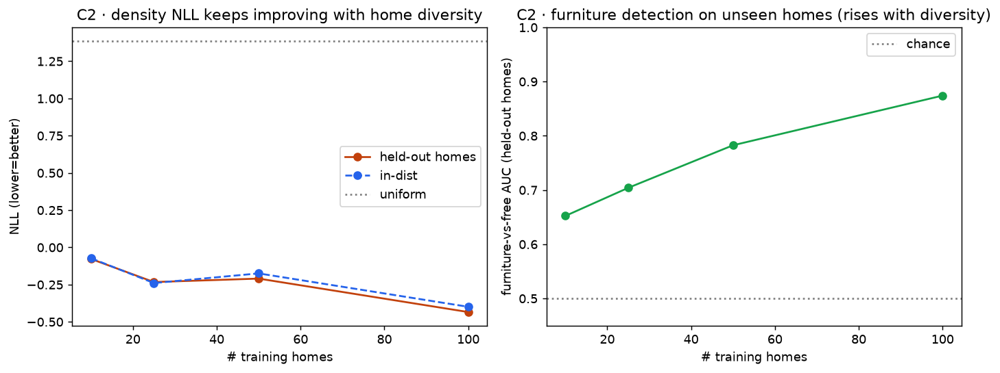
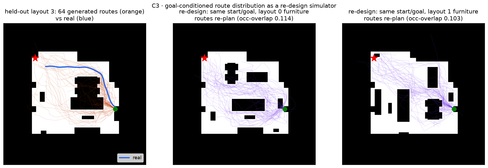
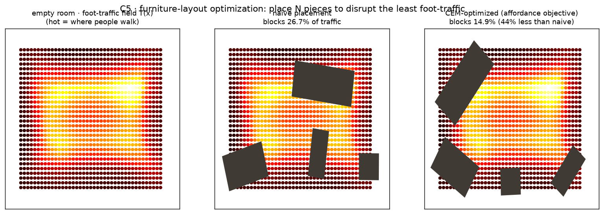

実データ LocoVR / LocoReal(ICLR 2025・MIT。実人間の目的志向歩行 × 実住宅)で、Layout-NF(TRUMANS 合成室)の主張を置き換え・拡張。p(居場所 ｜ 局所占有) と p(経路 ｜ レイアウト,start,goal) を条件付き Normalizing Flow で学習し、厳密尤度を設計の目的関数にする。
要旨：Layout-NF は合成データ(TRUMANS)で家具配置を採点・逆設計するデモだった。本トラックはこれを実データで検証する。C0/C1 実キャンパス室(家具4配置)で、学習した居場所密度が実家具を低アフォーダンスと当て(AUC 0.77)、家具化したセルの実訪問密度は69倍落ちる(合成A2の実データ再現)。C2 131の実住宅で学び、未知住宅でも密度は劣化せず(held-out NLL −0.43 ≈ in-dist −0.40)、家具検出AUCは住宅数とともに0.65→0.87 と上昇。C3 定式化を目的地条件の軌跡フローに変え、家具を動かすと動線分布がどう引き直されるかを実測の4レイアウトで検証(生成分布 minADE 0.39m、A*・直線を上回る)。各図に観察と解釈を併記し、効かなかった手(per-step 尤度ランキング)も正直に記録する。
LocoReal=実キャンパス室で家具配置を4通りに変えた物理MoCap(5人・430軌跡)。LocoVR=131の異なる実住宅(HM3Dスキャン)の目的志向VR歩行(7000+軌跡)。各軌跡={時刻, ゴール(3D), シーンID, p1, p2}、各人物=部位ごとの {pos:(T,3) 世界m, pose}。占有 binary_map(1024²・黒=家具/壁・白=歩行可能)。p1(目的志向の歩行者)を使い、p2 は静的レイアウト問題では動的要因として無視。1px≈0.98cm(TRUMANS 2cm より高精細)。

観察：LocoReal 4レイアウトで p1 の腰位置(オレンジ)を占有(黒=家具/壁)に重ねると、99.8%が非占有セル上を走り、軌跡は家具島(黒い矩形)を明確に回り込む。4レイアウトで家具配置が異なり、軌跡の通り方もそれに応じて変わる。
だから何が言えるか：公式の座標変換 px=(m+5)·1024/10 と占有の極性が正しく、以降の「実家具の上に人が居ない」という採点が物理的に正しい位置で効く前提が確認できた。実軌跡が実家具を迂回する=Layout-NF が合成摂動で示した現象の“本物版”がここにある。

観察：(左)実占有で学習した p(居場所｜占有) は、実家具セルの logp が free セルより低い——4レイアウト全てで符号一致、AUC 0.77(val NLL −0.27 ≪ 一様1.39)。(中)4レイアウトは同じ室でピクセル整合するので、あるレイアウトで家具化したセルの実訪問密度を、それが空いている他レイアウトと直接比較でき、69倍の低下。(右)訪問密度(hot)は家具島(dark)を避けて歩行域に集中。
だから何が言えるか：Layout-NF が合成の家具貼りで示した配置採点は、実人間・実家具・実占有でもそのまま成立する。中央の69倍低下はモデルに依らないデータレベルの反実で、THÖR-MAGNI の B8(同一位置での障害物あり/なし=88倍)を家具の置き換えという形で再現したもの=Layout-NF の主張の実証。

観察：LocoVR の地図は住宅ごとの10m crop で世界原点が住宅ごとに異なり(未記載)、LocoReal の固定変換は効かない。そこで「人は自由空間を歩く」制約からオフセットを探索すると、131/131住宅を on-free 中央値100%・平均99.8%・最小92.9%で登録(右=登録された実住宅の軌跡が家具を回り込む例)。
だから何が言えるか：これは C0 の LocoVR 版(座標整合)。物理制約による正当な座標登録で、131の実住宅すべてで占有条件付けが正しく効く——この後の cross-space 汎化の前提が担保できた。

観察：131住宅を train-pool 100 / held-out 31 に分け、訓練住宅数を 10/25/50/100 と増やす。(左)未知住宅の密度NLL(オレンジ)は in-dist(青)に密着したまま −0.08→−0.43 と改善し頭打ちが見えない(held-out −0.434 が in-dist −0.399 とほぼ同値、gap比1.09)。(右)未知住宅での家具 vs free 検出AUCは 0.65→0.87 と住宅数で上昇し続ける。
だから何が言えるか：THÖR(1室)では原理的に不可能だった「知らない実空間へ効く」を、131の実住宅で実証。TRUMANS A7 が「密度は多様性で改善/検出は24室で早期飽和」だったのに対し、実住宅では検出AUCも住宅数とともに伸び続ける——合成室より実住宅の多様性の方が採点器を鍛える、という実データならではのスケール則。

観察：定式化を p(位置｜占有) から p(経路｜レイアウト,start,goal)(自己回帰ステップフロー)に変更。(左)未知レイアウトで start→goal を64本ロールアウト(橙)すると、実経路(青)に沿って中央家具島を迂回する束になる(生成分布の minADE 0.387m < A* 0.679m < 直線 0.809m、家具重なりは直線の1/3)。(中・右)同じ start/goal のまま家具配置を別レイアウトに差し替えると、経路分布が新しい家具を避けて再ルーティングする。
だから何が言えるか：家具を動かすと動線がどう引き直されるかを、実測の4レイアウト(相互 ground truth)に照らして予測できる=再設計シミュレーションの成立。NF は「1本の最短路」でなく経路の分布(迷い・複数ルート)を出せるのが差別化点。生成は「フローが提案し、占有が却下する」占有認識ロールアウトで実現。
正直な負の結果(C3注記)：経路全体の per-step 尤度で実経路 vs 直線を判別しようとすると失敗する——直線の方が per-step logp が高い(4.21 vs 3.22)。ステップ尤度は「ゴールへ直進」を局所最尤とするため、大域的な迂回の良し悪しを測れない。局所尤度 ≠ 大域的な導線品質——Layout-NF の A1/A2 の教訓(素朴な予測モデルは逆設計に使えない)がここでも再現。だから C3 の主張は per-step 尤度でなく生成分布の ADE に置く。

観察:アフォーダンスフロー(C1)を設計の目的関数にする。(左)空室で T(x)=exp logp(居場所) を求めると、人が歩くfoot-traffic 場(中央が高、縁が低)が得られる。これを固定コスト場として、家具 N 個(ソファ/机/棚/椅子)の配置 (位置・回転) を CEM で同時最適化し、家具が乗る traffic の総和 D=Σ_被覆セル T を最小化。(中)無作為配置は主動線上に家具が乗り 26.7% の traffic を妨害。(右)最適化は家具を低traffic の縁へ寄せ、14.9%(44%減)。~2秒。
だから何が言えるか:Layout-NF の A3(家具1個の disruption マップ)を、複数家具の同時最適化へ一般化。尤度を目的関数にすると、CEM 等の直接探索で「使える配置の中で動線を最も温存する置き方」を出せる=逆設計の最適化計算が成立。固定した空室 traffic 場をコストに使うので目的は非ゲーム化(モデルを騙して密度を水増しする退化を防ぐ)。非重複・室内制約を入れて「隅に積む」退化も回避。下のデモの「最適化」ボタンで、任意の部屋・家具に対してブラウザ内で同じ最適化を実行できる。
使い方:家具(灰ブロック)をドラッグで移動、角をドラッグでリサイズ、ダブルクリックで削除。緑=スタート / 赤=ゴールをドラッグ。部屋枠の角をドラッグでサイズ変更。動かすたびに、start→goal の経路分布(橙)がその場で再ルーティングします。
これは本物の学習済みモデルです:このデモは C3 の学習済み StepFlow(CropCNN + zuko の Neural Spline Flow)の重みを webdemo/stepflow.json として書き出し、その順伝播(条件付きCNN → スプライン流の逆写像サンプリング)を JavaScript に移植してブラウザ内で実行しています。移植は PyTorch の出力と最大絶対誤差 1.1e-6 で一致を検証済み(node webdemo/stepflow.js)。各ステップで、占有マップ(部屋+家具)から組んだエゴ中心の48×48占有パッチを条件に学習済みフローがステップ分布を出し、そこから1歩をサンプル。ヘディングはゴール方向へ向けつつ家具を迂回し(クリアランス+ゴール前進で選択)、実データ学習時と同じ条件付けで進みます(locovrnf/traj.py の占有認識ロールアウトと同型。学習済みモデルは局所の歩き方を、外側の目的地コントローラが大域の向きを担う)。ドラッグ中だけは軽量な代理でプレビューし、離すと本物モデルで計算します(CNN推論のため数秒)。
uv run --no-project python -m locovrnf.{fetch,coordcheck,affordance,register,crossspace,traj} で再現。データ入手は README 参照(LocoVR/LocoReal・MIT)。KAN-NF ハブ:kankusakabe.github.io/KAN-NF